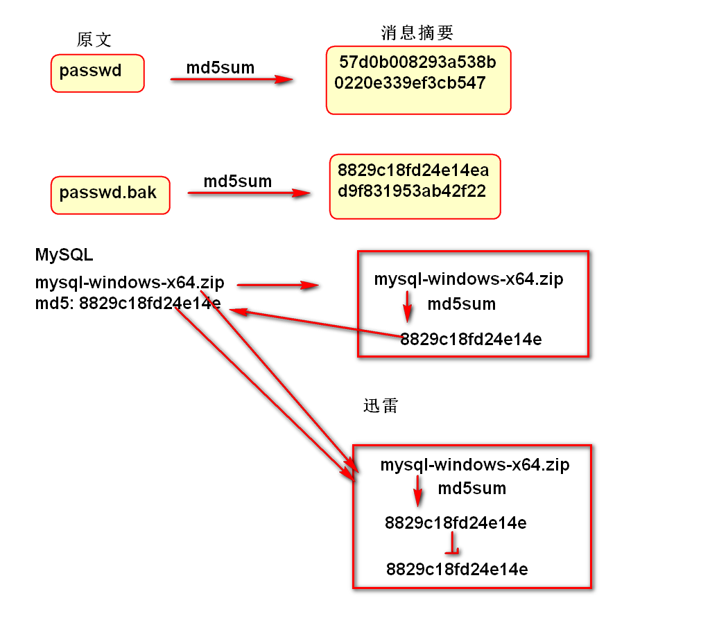
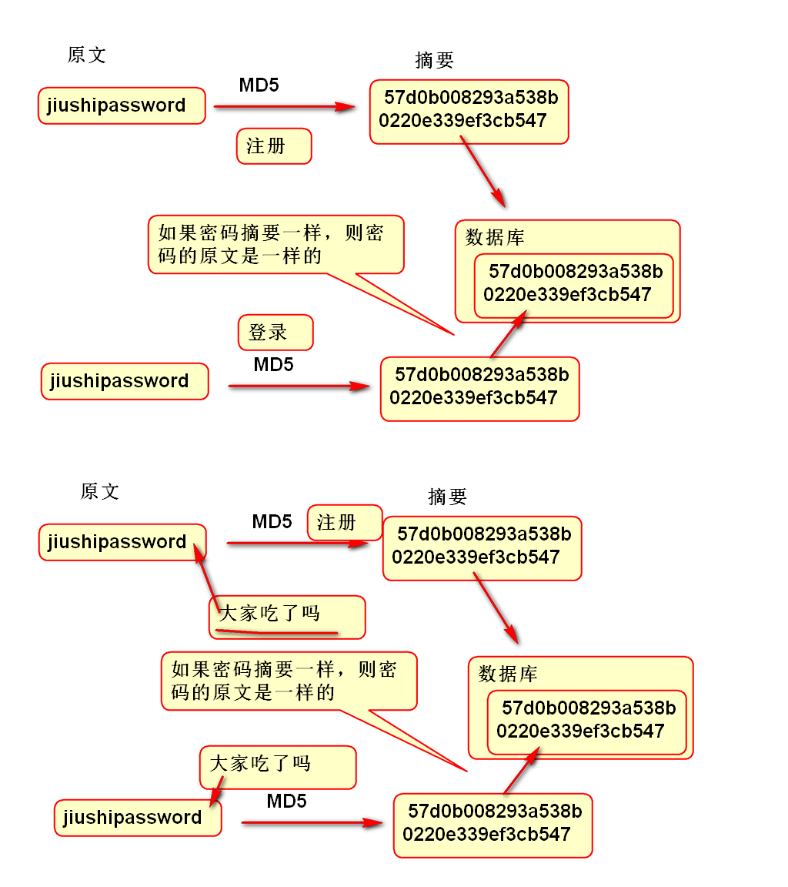

XHR2提供了异步文件上载功能。
使用步骤是：
<input type="file"> 对象选择获取文件对象开发步骤：
创建上载页面元素：
<h2>ajax 上载</h2>
<div>
<!-- 指定 multiple="multiple" 属性，可以选择
多个文件 -->
<label>选择图片</label>
<input type="file" id="images"
multiple="multiple"><br>
<input id="ajax_upload" type="button"
value="ajax上载">
</div>
<h3>选择了：</h3>
<div id="selected">
</div>
编写脚本显示准备上载的图片：
var images = document.getElementById("images");
var selected=document.getElementById("selected");
images.onchange=function(){
var files = this.files;
selected.innerHTML="";
for(var i=0; i<files.length; i++){
var f = files[i];
var url = window.URL.createObjectURL(f);
var img = new Image();
img.src = url;
selected.appendChild(img);
}
};
编写Ajax上载脚本：
var btn=document.getElementById("ajax_upload");
btn.onclick=function(){
var files = images.files;
var frm = new FormData();//空白表单
//将文件添加到frm中
for(var i=0; i<files.length; i++){
var f = files[i];
frm.append("images", f, f.name);
}
//发起Ajax请求
btn.value = "上载中...";
var xhr = new XMLHttpRequest();
xhr.open("post", "uploadImages.do");
xhr.onreadystatechange = function(){
if(xhr.readyState==4&&xhr.status==200){
var json=JSON.parse(xhr.responseText);
console.log(json);
selected.innerHTML=json.message;
btn.value = "ajax上载";
}
};
xhr.send(frm);
};
编写服务器控制器接收文件上载
/**
* 处理上载请求, 保存多个文件
*/
@RequestMapping(value="uploadImages.do",
method=RequestMethod.POST)
@ResponseBody
public ResponseResult
ResponseResult<Void> rr=new ResponseResult<Void>();
rr.setState(ResponseResult.STATE_OK);
rr.setMessage("上载成功");
return rr;
}
测试
利用JQuery也可以实现Ajax文件上载
编写界面
<h2>JQuery 上载</h2>
<div>
<label>选择图片</label>
<input type="file" id="photos"
multiple="multiple"><br>
<input id="jquery_upload" type="button"
value="jquery上载">
</div>
<h3>选择了：</h3>
<div id="selected_photos">
</div>
编写脚本显示准备上载的图片
var photos=$("#photos");
var selectedPhotos=$("#selected_photos");
photos.change(function(){
var files=this.files;
selectedPhotos.empty();
for(var i=0; i<files.length; i++){
var f = files[i];
var url = window.URL.createObjectURL(f);
var img = $("<img src='"+url+"'>");
selectedPhotos.append(img);
}
});
编写上载脚本：
var ajaxBtn=$("#jquery_upload");
ajaxBtn.click(function(){
var url="uploadImages.do";
var data=new FormData();
var files = photos[0].files;
for(var i=0; i<files.length; i++){
var f = files[i];
data.append("images", f, f.name);
}
ajaxBtn.val("上载中...");
$.ajax({
url:url,
type:"POST",
data:data,
dataType:"json",
processData:false, //不要处理 data数据！！！
contentType:false, //不要有JQuery设定ContentType
success:function(json){
ajaxBtn.val("JQuery 上载");
selectedPhotos.html(json.message);
}
});
});
测试
消息摘要： 利用散列算法抽取一组数据的特征，做为这个数据的唯一标识，相当于这组数据的“指纹”
一组数据 -- MD5、SHA散列算法 --> 消息摘要
同样的数据原文具有相同的摘要，不同的原文具有不同的摘要。
消息摘要的用途： 用于检验数据的完整性！
原理：

消息摘要技术广泛用在软件中，用于比较数据的一致性和完整性。
密码加密原理：

消息摘要与密码加密
修改数据表的列
alter table t_user modify password varchar(50);
消息再要案例：
public class TestCase {
@Test
public void testMd5() throws Exception{
String file = "passwd";
FileInputStream in=new FileInputStream(file);
//计算文件的摘要
//linux 计算摘要命令： md5sum passwd
//mac 计算摘要命令: md5 passwd
String md5=DigestUtils.md5Hex(in);
System.out.println(md5);
in.close();
}
@Test
public void testStringMd5(){
String password="1234";
String md5=DigestUtils.md5Hex(password);
System.out.println(md5);
String salt="今天你吃了吗?";
md5 = DigestUtils.md5Hex(password+salt);
System.out.println(md5);
md5 = DigestUtils.md5Hex(salt+password);
System.out.println(md5);
}
}
更新项目实行密码加密功能：
更新配置文件添加“盐”：
<!-- 使用表达式 #{config.salt}可以读取值 -->
<util:properties id="config">
<prop key="salt">今天你吃了吗？</prop>
</util:properties>
更新UserServiceImpl，增加密码加密和加密验证功能：
//从Spring中找到一个BeanID为config的bean，获取
//其salt属性的值，注入到salt变量中
@Value("#{config.salt}")
private String salt;
public void register(
String username,
String password,
String phone,
String email) {
User user = new User();
Date now = new Date();
user.setUsername(username);
//密码摘要加密
System.out.println(salt);
String pwd=DigestUtils.md5Hex(password+salt);
System.out.println(pwd);
user.setPassword(pwd);
user.setPhone(phone);
user.setEmail(email);
user.setDisabled(0);
user.setCreatedTime(now);
user.setCreatedUser("System");
user.setModifiedTime(now);
user.setModifiedUser("System");
register(user);
}
@Transactional
public User login(String username,
String password) {
//为了测试AOP功能添加的 测试代码
System.out.println("登录功能");
if(username.equals("chenghen2")){
System.out.println("异常");
throw new RuntimeException("出异常了");
}
User u = findUserByUsername(username);
if (u == null) {
return null;
} else {
//比较摘要加密以后的密码
String pwd=DigestUtils.md5Hex(password+salt);
if (u.getPassword().equals(pwd)) {
return u;
} else {
return null;
}
}
}
public int updatePassword(Integer uid,
String oldPassword,
String newPassword) {
// 初始化：参数、返回值
int state = -1;
// 处理业务
// 根据uid获取用户信息
User user = userMapper.findUserById(uid);
// 判断用户输入的旧密码是否正确
String pwd=DigestUtils.md5Hex(oldPassword+salt);
if (user.getPassword().equals(pwd)) {
// 密码正确，允许修改
pwd = DigestUtils.md5Hex(newPassword+salt);
userMapper.updatePassword(uid, pwd);
// 给正确的返回值
state = 1;
}
// 返回
return state;
}
命令的基本结构
命令 [选项]... [参数]...
ls
ls -a
ls -a /
ls -al /
ls -a -l /
pwd 显示当前工作目录
ls 显示文件目录内容
cd 改变工作目录
对文件和文件夹实现创建，删除，移动，改名等功能
创建文件夹命令：
mkdir 文件夹
创建文件命令
touch 文件名
移动或者改名命令
mv 文件/文件夹 新文件/新文件夹
mv 文件/文件夹 已经存在文件夹